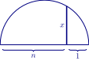

In this activity we will compute some basic quadratures.
When computing a quadrature of a shape in the method of the ancient Greeks, one needs to produce a line segment
whose length gives the side of a square of equal area to the original shape.
Consider the figure below. Explain how one could construct it and what segment represents.

Construct a rectangle whose side lengths are 8 units and 5 units. Then construct its quadrature. Explain your
construction step-by-step, and tell why it works!
Construct a triangle whose base has length 8 units and whose height has length 5 units. Then construct its
quadrature. Explain your construction step-by-step, and tell why it works!
Suppose you have a square whose side length is 8 units and another square whose side length is 15 units. How
would you construct the quadrature of the two areas together? Explain how you know.
How do you compute the quadrature of a polygon?